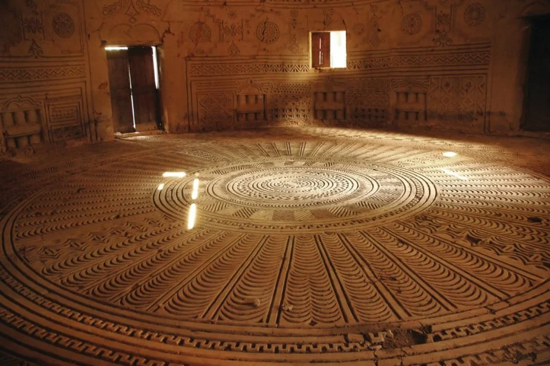
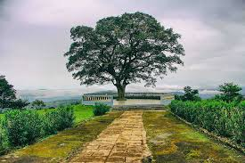

Tourist destination
Home of many tourist destinations including the Chute de Ditinn

Highest in altitude in Guinea
It is approximately 200 km by air from the capital Conakry and about 280 km by road


Town of farmers
Dalaba produces the majority of potatoes consume in Guinea and neighboring coutries.